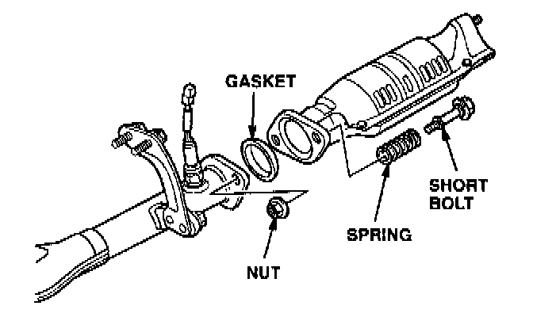
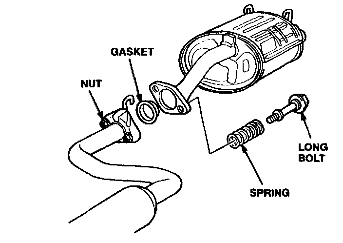

Exhaust System - Buzzing Noise
October 14, 1997BULLETIN NO.
97-035
YEAR
1994 - 97
MODEL
INTEGRA
VIN APPLICATION
See VEHICLES
AFFECTED
Exhaust System Buzz
SYMPTOM
A buzz from the exhaust system between 3,500 and 3,600 rpm.
PROBABLE CAUSE
The flexible joint connections in the exhaust system have insufficient spring tension.
VEHICLES AFFECTED
3-door (All except GS-R):
Thru VIN JH4DC4...VS015663
4-door (All except GS-R):
Thru VIN JH4DB7...VS005274
CORRECTIVE ACTION
Replace the nuts, bolts, springs, and gaskets at the "A" pipe outlet and the muffler inlet.
PARTS INFORMATION
Flange Gasket kit: P/N 18010-ST7-305
WARRANTY CLAIM INFORMATION
In warranty:
The normal warranty applies.
Operation number: 311114
Flat rate time: 0.6 hour
Failed P/N: 18230-SAO-930
Defect code: 042
Contention code: B07
Template ID: 97-035A
Skill level: Repair Technician
Out of warranty:
Any repair performed after warranty expiration may be eligible for goodwill consideration by the District Technical Manager or your Zone Office. You must request consideration, and get a decision, before starting work.
REPAIR PROCEDURE
1. Warm the engine to normal operating temperature.
2. Make sure the exhaust system heat shields are not cracked or dented and do not have any rocks in them. Perform any necessary repairs before continuing with this procedure.
3. Run the engine between 3,500 and 3,600 rpm, and listen for a buzzing noise from the exhaust system; if you hear it, continue to the next step.
4. Raise the vehicle, and let the exhaust system cool for at least 30 minutes.

5. Remove and discard the nuts, bolts, springs, and gasket at the connection of exhaust pipe "A" and the catalytic converter.
6. Find the two shorter bolts in the flange gasket kit, and install them, along with the new nuts, springs, and gasket at the connection of exhaust pipe "A" and the catalytic converter. Torque the bolts to 22 N.m (16 lb-ft).

7. Remove and discard the nuts, bolts, springs, and gasket at the connection of exhaust pipe "B" and the muffler.
8. Install the two longer bolts from the flange gasket kit with the new nuts, springs, and gasket at the connection of exhaust pipe "B" and the muffler. Torque the bolts to 22 N.m (16 lb-ft).
9. Lower the vehicle.
10. Run the engine to make sure the noise is gone.